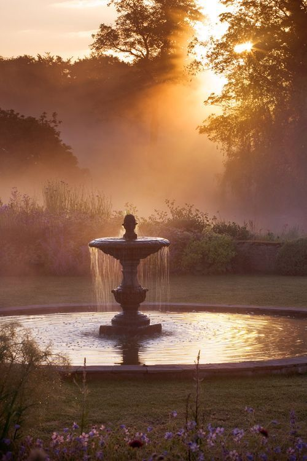
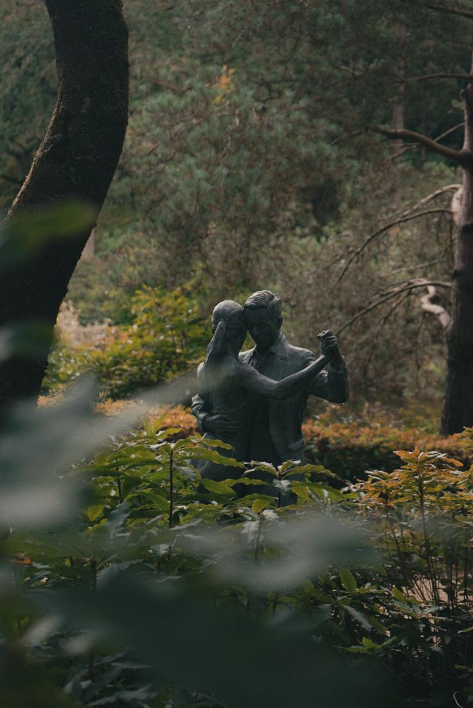

Elijah
Role: Eldest son of a duke.
Caracteristics: Logical, mature and rational. His perfectionism can make him rigid or overly controlled.
Among my favorite reads are nineteenth-century classics such as Jane Eyre, fantasy stories shaped by political intrigues, and feminist retellings of mythology.
My own project does not belong exclusively to any one of these genres. Like any literary work, it is shaped by intertextuality: it draws from these influences while transforming them through my own perspective as a writer.

If the setting is inspired by the atmosphere of the eighteenth and nineteenth centuries, I did not want the story to be restricted by strict historical accuracy.
My main focus is the storyline and the development of the characters. For that reason, I chose a third-person narrative that follows the perspectives of the three main characters.
The novel is not set in a fantasy world in the traditional sense. However, the freedom offered by this fictional setting may allow mysterious or even supernatural elements to emerge later.

Role: Eldest son of a duke.
Caracteristics: Logical, mature and rational. His perfectionism can make him rigid or overly controlled.
Role: Youngest son of a duke.
Caracteristics: Indolent in appearance, yet curious, with a tendency to overanalyse everything for the sake of understanding it.
Role: Daughter of a viscount. She has a twin brother.
Caracteristics: Difficult to define, Diana carries an eerie and unsettling presence that remains hard to explain, despite her consistently polite and proper behaviour.
As a child, you could often find me sitting in a corner, immersed in a book or already writing stories of my own on sheets of paper, held together by staples.
This passion grew throughout my studies, from secondary school to my final year at university. And I began creating this novel because I felt the need to give a concrete form to that long-standing interest.
Looking back, my first drafts were often awkward. I gradually learned to begin with ideas, structure them, enrich them, revise them and proofread them repeatedly.
Completing two master's theses under the supervision of a university professor also strengthened my editing skills and helped me refine this methodology. Maintaining consistency across a long piece of work became an essential part of the way I protect the quality of my writing.
This page was created in HTML as part of my web development learning process, combining my interest in writing with my growing technical skills.
Discover my portfolio and learn more about my projects.
Return to my portfolioSee how I built this page using HTML and CSS.
Explore the code behind this page